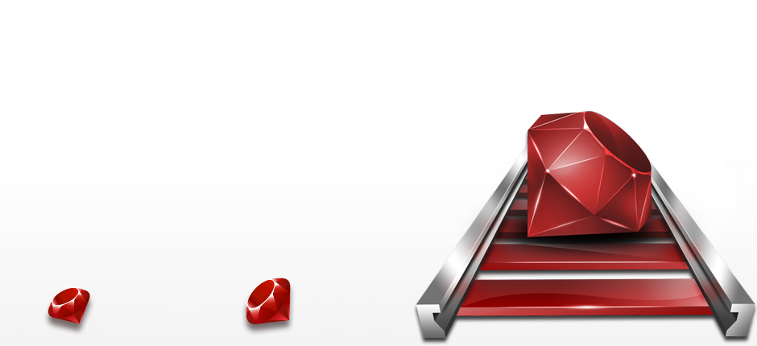

What is Ruby on Rails?
Ruby on Rails - often simply called Rails - is a popular server-side web development framework created by David Heinemeier Hansson. Rails uses the Ruby programming language to dynamically generate HTML, CSS, and JavaScript files(the components of a web page), and often content from a database - all run on a web server. The conjunction of these components allow the creation of interesting web applications with ease, especially with the ability to add onto the Ruby with a robust open source package library of RubyGems ("gems").
Rails is also well-documented API (application programming interface), which is based upon established conventions and directives for using the framework to build websites.
One of the main tenets of Ruby on Rails is "convention over configuration," (CoC):
This means that many decisions are made by default without manual configuration from the user, as demonstrated above. This consistency aids productivity, maintenance and collaboration, and is one of the reasons for the popularity of the framework, along with the vast open source libraries to speed development.
Without the Rails web development framework, the task of creating a web application is quite complicated as far as implementing the infrastructure necessary to incorporate functions such as database access, processing form submission, and generating HTML. The Rails framework does this automatically with specific conventions, using the creator's intelligent opinion of the best way to put the build the infrastructure for a web application. The developer does not have to make these decisions when using Rails. This singular method of application infrastructure construction allows not only for faster development, and easier maintenance, but also for easier collaboration with other Rails developers since all Rails applications are built in according to the same rules.
Omakase - in Japanese, it means "I'll leave it to you." In sushi restaurants, ordering "omakase" entails leaving the menu selection in the hands of the chef, who knows the food best, rather than choosing from the menu. According to an essay written by Rails creator Heinemeier Hansson, Rails is Omakase :
"A team of chefs picked out the ingredients, designed the APIs, and arranged the order of consumption on your behalf according to their idea of what would make for a tasty full-stack framework.. When we, or in some cases I - as the head chef of the omakase experience that is Rails - decide to include a dish, it's usually based on our distilled tastes and preferences. I've worked in this establishment for a decade. I've poured well in the excess of ten thousand hours into Rails. This doesn't make my tastes right for you, but it certainly means that they're well formed."
Another tenet of Ruby on Rails is "Don't Repeat Yourself" (DRY):
Rails aims to reduce, reuse, and even eliminate code whenever possible, with the use of Ruby's metaprogramming features paired with Rails conventions. Whole (simple) web applications can be written with only a few lines of code. The downside to this is that to achieve this brevity of code, Rails leaves a lot of default behavior tucked away out of sight in the Rails code library, making it difficult to customize.
Now that you have a very basic understanding of what Ruby on Rails is, you can dig into some of these resources to learn more!